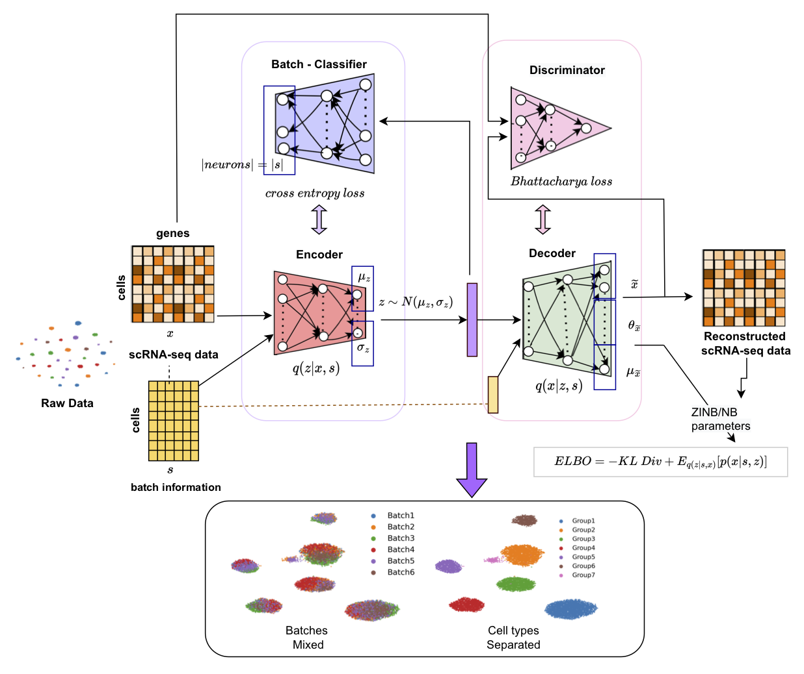

Overview
Welcome to scDREAMER’s documentation!
scDREAMER is a single-cell data integration framework that employs a novel adversarial variational autoencoder for learning lower-dimensional cellular embeddings and a batch classifier neural network for the removal of batch effects. See our preprint bioRxiv for more details.
What Computational tasks can scDREAMER be used for?
scDREAMER suite can be used for:
scDREAMER for an unsupervised integration of multiple batches
scDREAMER-SUP for a supervised integration across multiple batches
scDREAMER-SUP can also be when cell type annotations are missing in the datasets i.e., 10%, 20%, 50%
Atlas level and cross-species integration
Large datasets with ~1 million cells
Cite this article
Ajita Shree*, Musale Krushna Pavan*, Hamim Zafar. scDREAMER: atlas-level integration of single-cell datasets using deep generative model paired with adversarial classifier. bioRxiv 2022.07.12.499846; doi: https://doi.org/10.1101/2022.07.12.499846 * equally contributed